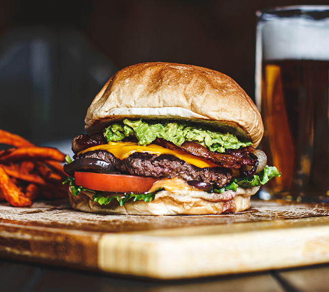

Burger

Description
Follow along this recipe to make 4 restaurant-style burgers from scratch.
Ingredients
- 1 lb ground lean (7%) beef
- 1 large egg
- 1/2 cup minced onion
- 1/4 cup fine dried bread crumbs
- 1 tbsp Worcestershire
- 1-2 cloves garlic, peeled and minced
- ~1/4 cup mayonnaise
- ~1/4 cup ketchup
- 4 iceberg lettuce leaves, rinsed and crisped
- 1 firm-ripe tomato, cored and thinly sliced
- 4 thin slices red onion
Steps
- In a bowl, mix ground beef, egg, onion, bread crumbs, Worcestershire, garlic, 1/2 tsp salt, and 1/4 tsp pepper until well blended
- Divide mixture into four equal portions and shape each into a patty ~4 inches wide
- Lay burgers onto hot grill and close lid
- Cook burgers, turning once, until browned on both sides and no longer pink inside (~7-8 mins total), then remove from grill
- Lay buns on grill and cook until lightly toasted (30-60 secs)
- Spread mayonnaise and ketchup on bun bottoms
- Add lettuce, tomato, burger, onion, and salt and pepper to taste
- Set bun tops in place